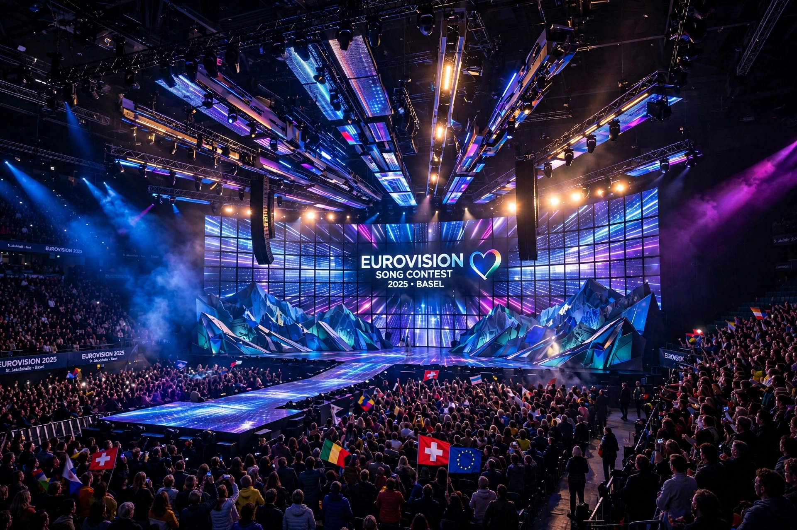

Eurovision is a network of the European Broadcasting Union (EBU) through which member broadcasters exchange television and radio content, most famously the Eurovision Song Contest, held annually since 1956. The term "Eurovision" is also used for the network's news, sport and music exchanges, and for related contests including the Junior Eurovision Song Contest.

The Eurovision Song Contest is the network's flagship production.
| Eurovision | |
| Organisation | European Broadcasting Union (EBU) |
|---|---|
| Founded | 1954 (network); Song Contest from 1956 |
| Headquarters | Geneva, Switzerland (EBU) |
| Flagship event | Eurovision Song Contest |
| Ident | Marc-Antoine Charpentier's "Te Deum" prelude |
The Eurovision network was established in 1954 to relay programmes across borders, beginning with broadcasts including the Narcissus Festival from Montreux and an exchange of summer programmes. Operated by the EBU - an alliance of public service broadcasters founded in 1950 - it became one of the world's largest programme-exchange systems, carrying news feeds and major sporting events such as the FIFA World Cup and the Olympic Games.
The Song Contest, first held in Lugano, Switzerland, in 1956 with seven countries, grew into one of the world's longest-running and most-watched television events, regularly reaching audiences of around 160 million. Participating countries submit an original song performed live; winners are chosen by combined national jury and public televotes. Famous winners include ABBA (Sweden, 1974, "Waterloo"), Celine Dion (Switzerland, 1988) and Loreen, who won twice for Sweden (2012 and 2023). Ireland and Sweden share the record of seven victories.
Eurovision-branded events include Junior Eurovision (from 2003), Eurovision Young Musicians, Eurovision Choir, and the New Year's Day Concert from Vienna. The network's signature tune, the prelude to Charpentier's Te Deum, precedes Eurovision broadcasts.